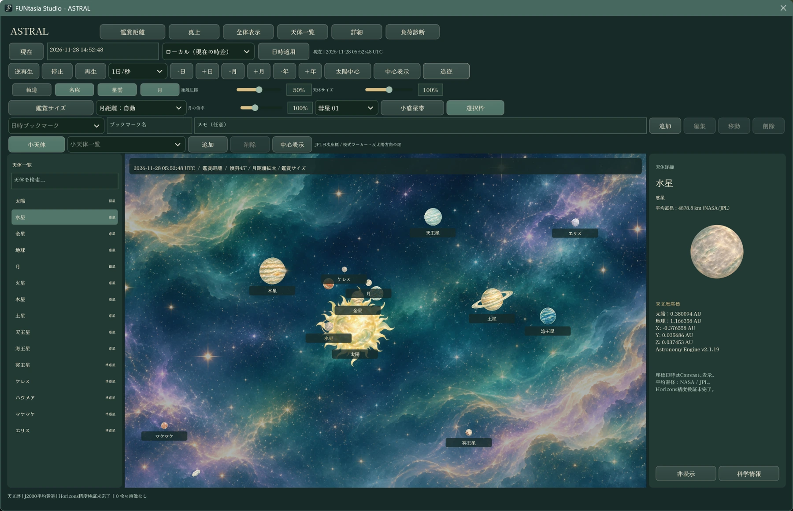
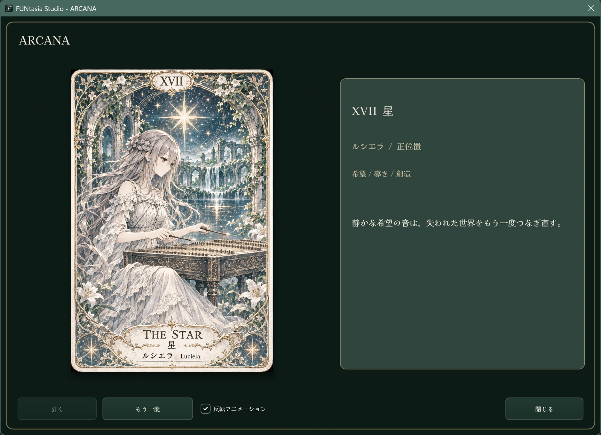
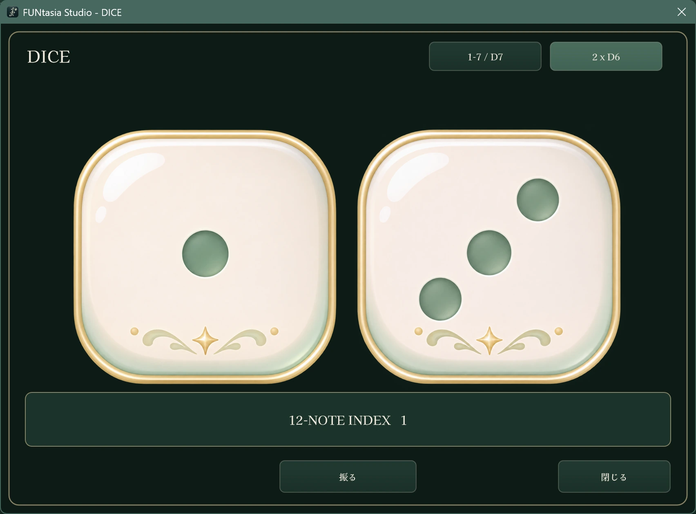
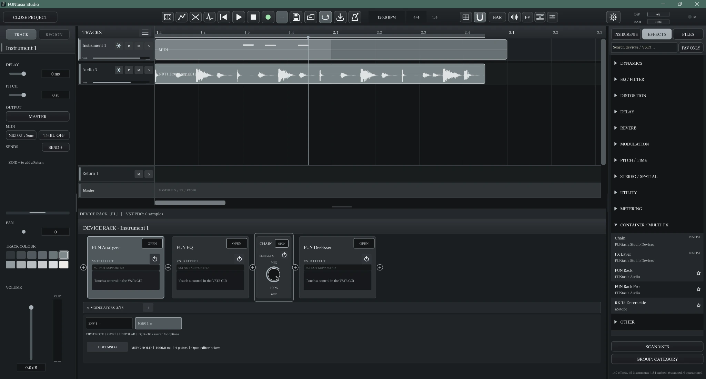
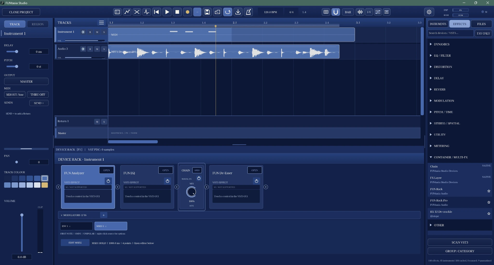
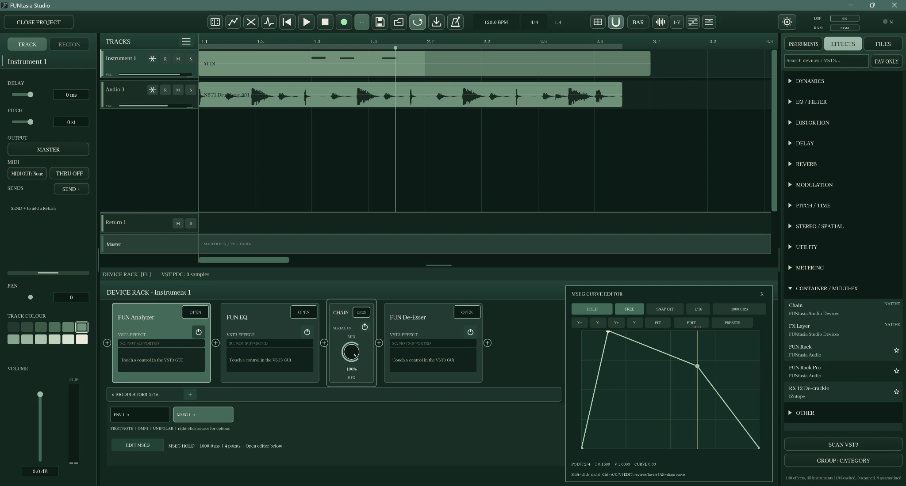

ASTRAL
Explore 15 celestial bodies, change the date and time, and view astronomical information against an illustrated star field.
Free educational audio software
Learn the studio.Find your sound.
A creative space where the fundamentals of music production become something you can see, touch and try. No price barrier. No single way to make music.
STUDIO GALLERY · 1.7.0 BETA
Actual screenshots from FUNtasia Studio 1.7.0 Beta. Select an image to see it at a larger size.

Explore 15 celestial bodies, change the date and time, and view astronomical information against an illustrated star field.

Draw a Major Arcana card for a creative prompt. The Star (Luciela) is shown here.

Use a seven-sided die mode or two six-sided dice to bring chance into musical ideas.
01 / THE STUDIO, YOUR WAY
Change the atmosphere
Choose from nine named colour themes, including Sakura Pink and Aquamarine. The same creative workspace takes on a whole new character, from quiet charcoal to deep forest green. Select any preview to view it larger.








The window icon and splash screen follow the selected theme. Original Sage uses the Forest splash. Real interface previews. Swipe sideways to explore all nine on smaller screens.
02 / CREATE WITHOUT THE TOOL SHUFFLE
A modern editing flow
Work directly with notes, regions and parameters in a unified editing environment. The aim is a more natural creative flow, without constantly switching between dedicated tools for every little action.

03 / SHAPE EVERY DETAIL
Creative control
Build layered arrangements, explore instruments and effects, and learn what changes when you move a fader, automate a parameter or route a signal differently. A broad sound palette, with the controls close to your hands.

04 / A CONNECTED WORKSPACE
Learn by doing
Practice arranging, processing and balancing audio without leaving the learning environment. Each area opens a different part of how music is made.

Balance levels and understand how tracks come together in a mix.

Explore instruments, effects, chains and layered processing in context.

Browse sounds and audition one-bar MIDI drum fills with acoustic or electronic preview kits.
05 / THEORY YOU CAN EXPLORE
Where sound meets understanding
Built-in learning views make scales, chords and voicings easier to investigate. Move between musical curiosity and hands-on practice, whether you're starting out or revisiting the fundamentals.

Study tonal relationships and explore scales, including the experimental Ruri-style degree notation.

Compare ways of placing notes and shaping the colour of a chord.

Explore a different instrumental perspective within the voicing and music-theory tools.
Why FUNtasia Studio exists
For a young person making their first track. For someone balancing an everyday budget. For someone who could afford expensive equipment but simply wants to learn. FUNtasia Studio opens the same learning environment to everyone, free of charge.
It is an educational and experimental space for studying masterclass materials and discovering how production works — not a promise of production-grade reliability.
Different circumstances. Equal curiosity. Equal access.
06 / START EXPLORING
Beta 1.7.0 · November 2026
NEW · BETA 1.7.0
ASTRAL manuals are included in English, Japanese, German, French, Russian and Simplified Chinese. Microsoft Edge WebView2 Runtime is required for the browser.
BETA 1.5.0 · SCORE VIEW
SCORE VIEW manuals are included in Japanese, English, German, French, Russian and Simplified Chinese.
Beta 1.4.1 hotfix: Fixed an issue where the VST3 host window and preset toolbar did not follow plugin GUI size changes. Updating from Beta 1.4.0 is recommended.
UPDATES THROUGH BETA 1.4.0 / DEVELOPMENT HIGHLIGHTS
Cadd9 → 1^235 and Csus2 → 1^25. Available for exploration in the Key & Chord Guide, Scale/Voicing Browser, guitar fretboard and Chord Track, including input previews.Ruri-style notation is an experimental introduction. The Bounce/Undo safeguards are not a guarantee against all crashes. This remains a learning-oriented pre-release, and features may continue to evolve.
FUNtasia Studio Beta 1.7.0
Free Windows educational application. See the GitHub release for the installer, setup information and notices.
Explore what's new in Beta 1.4.0 in the illustrated update article on note (Japanese) ↗. More development stories on Hʉeliang's note page ↗.
07 / SUPPORT DEVELOPMENT
Support the Studio
FUNtasia Studio is free so that anyone can explore and learn how music production works, regardless of their financial circumstances. We want to keep building this learning space while staying true to that commitment.
Creating and maintaining software takes time and money, from development equipment to the everyday costs of sustaining the work. If you believe in this mission and are in a position to help, please consider supporting it.
Our Amazon Wish List includes development equipment, food, and everyday essentials. Gifts from the list make a meaningful difference in helping us continue development.
SUPPORT VIA AMAZON WISH LIST ↗All support is entirely optional. FUNtasia Studio remains free regardless of whether you contribute. Please only give if it is comfortable for you.